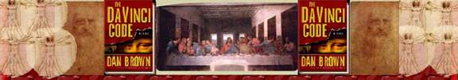
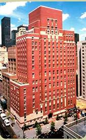
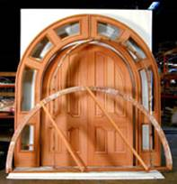
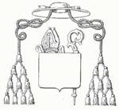
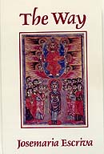
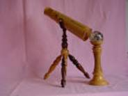

The Opus Dei Awareness Network, Inc

CHAPTER
5
Hasat Cakkalkurt
Opus Dei
133,000 square foot tower
Indiana limestone
May and Pinska
Millwork
Penthouse apartment
Bishop Manuel Aringarosa
Cassock
Purple cincture
Hand-tooled mitre-crozier appliqué
Josemaria Escriva and The Way
Televangelists
Tithing
Self-flagellation
The cilice
Mescaline
FBI spy Robert Hanssen
Prelature
The kaleidoscope of power
The keystone
The Church of Saint-Sulpice
Hyssop
Psalms
Murray Hill Place- 243 Lexington Avenue in New York City

Opus Dei Headquarters on 243 Lexington Avenue, New York City.
(All photos on this page by Bjorg; May & Pinska, Architects) www.danbrown.com
Opus Dei main entrance.
“Opus Dei is building a $47 million national headquarters and conference center that is to open next year. The architects of the 133,000-square-foot building, which is being clad in red brick and Indiana limestone, are May & Pinska. The construction manager is the Tishman Construction Corporation. Six floors of the building will be set aside for the national organization. But much of the structure will be used as a conference, educational and instructional center for Opus Dei members and others. There will be about 100 bedrooms, six dining rooms, libraries, living rooms, meeting rooms and offices. Chapels will also be found on the 2d, 8th and 16th floors, ornamented with millwork and marble. Atop the building's setbacks will be four outdoor terraces, and a public plaza on 34th Street will be planted with magnolia trees.”"Opus Dei is dedicated to the sanctification of work and daily life," Mr. Finnerty said. "New York is a center of work and activity in the United States. So much of what goes on in the United States flows through New York. It's very appropriate for us to be there." New York Times/February 21, 1999 http://www.rickross.com/reference/opus/opus36.html
Opus Dei “Opus Dei is a personal prelature of the Catholic Church. It was founded in Madrid on October 2, 1928, by St. Josemaría Escrivá. Currently over 80,000 people from every continent belong to the prelature. Its headquarters, together with its prelatic church, are in Rome The aim of Opus Dei is to contribute to that evangelizing mission of the Church. OpusDei encourages Christians of all social classes to live consistently with their faith, in the middle of the ordinary circumstances of their lives, especially through the sanctification of their work. The faithful of the prelature carry out their individual task of evangelization in the various sectors of society in which they live and work. Their apostolic work is not limited to specific fields such as education, care for the sick, or other forms of direct social aid. The prelature seeks to remind people that all Christians, whatever their background or situation, must cooperate in solving the problems of society in a Christian way, and bear constant witness to their faith.” www.opusdei.com 09.20.2004). All the references to Opus Dei in The Da Vinci Code with the page numbers can be found at: http://itrs.scu.edu/students/Winter04/French/opus/brown.html
A critical description of Opus Dei can be found at (www.odan.org)
“Opus Dei is an organization founded in Spain in 1928 by Josemaria Escriva
de Balaguer. The stated aim of Opus Dei is to "spread throughout society
a profound awareness of the universal call to holiness and apostolate through
one's professional work carried out with freedom and personal responsibility."
(Encyclopedia of Associations)”
There are different classes of membership in Opus Dei:
Numerary members pledge to remain celibate and generally live in Opus Dei houses. They commit their entire salaries to Opus Dei, submit incoming and outgoing mail to their directors, and practice various forms of corporal mortification, including use of the cilice, a spiked chain worn around the thigh, and use of the discipline, a knotted rope for whipping.
Supernumerary members may be married, and live with their families. They follow the same "plan of life" as the numeraries, but generally do not know about many of the details of numerary life. They contribute large portions of their income to Opus Dei, often at the expense of their local parishes.
Numerary priests join Opus Dei as lay members, but are then hand-picked by Opus Dei superiors to become priests of Opus Dei. Numerary priests hold the top government positions in Opus Dei. Many hold important positions in the Vatican. Each Opus Dei house is assigned a numerary priest, whose responsibilities include saying Mass, hearing confessions and giving spiritual direction to the Opus Dei members.
Associate Opus Dei members also pledge celibacy, but they generally do not live in Opus Dei houses. They include people who have not acquired university degrees, or who must remain with their families for personal reasons.
Numerary assistants are women who pledge celibacy, and are responsible for the care and cleaning of all Opus Dei residences.
Cooperators of Opus Dei provide financial support, but are not considered members of Opus Dei. Unlike Opus Dei members, cooperators do not have to be Catholic.
“The Opus Dei Awareness Network (ODAN) was founded in 1991 to meet the growing demand for accurate information about Opus Dei and to provide education, outreach and support to people who have been adversely affected by Opus Dei. ODAN challenges many of Opus Dei's practices such as corporal mortification because of the way they affect an individual's personal freedom, choices and family life. Since 1991, ODAN has been in contact with countless individuals, families, the secular and religious press, clergy, religious, cult awareness organizations, campus ministers, home-schooling parents and more. ODAN is a worldwide community of people who have had painful experiences as a result of their association with Opus Dei.”www.odan.org 09.20.2004
Indiana Limestone “Limestone: A rock which consists chiefly of carbonate of lime, and yields lime when burnt. (The crystalline variety of limestone is marble.)”
“Indiana is a name of a state in the U.S.A., used esp. attrib. to designate objects, etc., from or connected with that state; esp Indiana limestone, a limestone sometimes known as Bedford limestone.”
1947 J. C. RICH Materials & Methods Sculpture viii. 219 Indiana limestone can be secured in buff to gray colors and is an attractive, fairly soft, and easily worked stone. 1969 R. MAYER Dict. Art Terms 193/2 Indiana limestone, the limestone most widely used by American sculptors... Bedford Stone is another Indiana limestone.Oxford English Dictionary Online © Oxford University Press 2004
Indiana Limestone adorns the U.S. Holocaust Memorial and Museum in Washington, D.C. http://igs.indiana.edu/geology/minRes/indianaLimestone/index.cfm
Millwork: “Wood which has been planed and finished at a sawmill prior
to sale; esp. such wood used in making window and door frames.”
1991 Canad. House & Home Dec. 51 (caption)
This new entertaining sunroom is rich and romantic in feel, with an evocative
mix of wood millwork, marble, mirror and stone floors.Oxford English Dictionary
Online © Oxford University Press 2004

(http://www.floridoor.com/millwork.htm)
Penthouse apartment A penthouse apartment is a special apartment on the top floor of a building. It may have exclusive features such as a private entrance or elevator. Penthouse apartments are often expensive, and associated with a luxury lifestyle.
http://www.free-definition.com/Penthouse-apartment.html
Bishop Manuel Aringarosa Aringa means herring, and rosa means red in Italian. In The Da Vinci Code Bishop Aringarosa is a red herrings in the Teacher’s plan.
Burstein, Dan. Secrets of the Code. CDS Books: 2004, p 326.
Cox, Simon. Cracking the Da Vinci Code. New York: Sterling Publishing, 2004, p. 21.
Cassock A long close-fitting frock or tunic worn by Anglican clergymen, originally along with and under the gown; but, in recent times, also under the shortened surplice, and sometimes by ‘High-Church’ clergymen, like the soutane of Roman Catholic priests, apart from these vestments, as a kind of ecclesiastical garb. Also, sometimes worn by vergers, choristers, and others engaged in ecclesiastical functions.
In this sense, which appears to date from the Restoration, it seems to be the continuation of the scholar's cassock; it had probably some reference to the canon of 60 years before, requiring clergymen not to appear in public ‘without coats or cassocks’
1727 DE FOE Hist. Appar. iii. (1840) 24 If the Devil should put on the gown and Cassock, or the black cloak, or the Coat and the Cord. 1866 C. WALKER Ritual, Reason Why 35 The Cassock is a long coat buttoning over the breast, and reaching to the feet. It is confined at the waist by a broad sash called the cincture. The collar is made to fasten right round the throat. Oxford English Dictionary Online © Oxford University Press 2004
http://www.eganchurchsupply.com/CS/Images/MsgrCassock.jpg 12/11/2004

Cincture “That which encircles or encompasses.”
A girdle or belt for the waist. (Mostly poetic, or in reference to ancient
times.) Etymology: ad. L. cinct ra girdle,
f. cinct- ppl. stem of cing- re to
gird.
1814 WORDSW. White Doe VII. 57 Her dress
A vest with woollen cincture tied. Oxford
English Dictionary Online © Oxford University Press 2004
Amethyst: A precious stone of a clear purple or bluish violet color,
of different degrees of intensity, consisting of quartz or rock-crystal colored
by manganese, or, according to Heintz, by a compound of iron and soda.
1874 WESTROPP Prec. Stones 41 The finest
amethysts are brought from India, Persia, Ceylon, Brazil, and Siberia. Etymology:
a. OFr. ametiste, amatiste, ad. L. amethyst-us, a. Gr.
- , prop. adj.
‘not drunken’ (f. priv. + *
, verbal adjective
f. 
 -
- 
 to intoxicate,
f. wine), applied
subst. to this stone (as also to a herb), from a notion that it was a preventive
of intoxication. In end of 16th c. the word began to be refashioned after
the Latin, though the earlier amatist was still usual in early part
of 17th.Oxford English Dictionary Online © Oxford University Press
2004
to intoxicate,
f. wine), applied
subst. to this stone (as also to a herb), from a notion that it was a preventive
of intoxication. In end of 16th c. the word began to be refashioned after
the Latin, though the earlier amatist was still usual in early part
of 17th.Oxford English Dictionary Online © Oxford University Press
2004
In The Da Vinci Code, Bishop Manuel Aringarosa wraps a purple cincture around his waist and wears a 14-karat gold ring with purple amethyst, large diamonds, and hand-tooled mitre-crozier applique. Why PURPLE? Before the Crucifixion of Jesus, “And the soldiers wove a crown of thorns and put it on his head, and they dressed him in a purple robe.” The Gospel of John 19.2 Coogan, Michael D. The New Oxford Annotated Bible. 3rd edition. 2001.
Hand-tooled mitre-crozier appliqué. Mitre Christian Church. In the Western Church: a tall deeply-cleft headdress worn by a bishop (occas. an abbot) as a symbol of episcopal office, forming in outline (as viewed from the front or rear) the shape of a pointed arch, and now usually made of embroidered linen or satin. b. By metonymy: the office or rank of bishop; a bishopric. Also (occas.): bishops collectively, the episcopate; a bishop (obs.).
1687 DRYDEN Hind & Panther I. 22 Our Panther,..The Crozier weilded, and the Miter wore.
c. Heraldry. A representation of a bishop's mitre, esp. as borne in British heraldry over the arms of episcopal sees, in place of a helmet and crest (also, occas. as a charge).
1988 T. WOODCOCK & J. M. ROBINSON Oxf. Guide Heraldry ii. 28 Pope Paul VI in 1969..abolished the use of mitres and croziers in episcopal arms
Crozier 3. The pastoral staff or crook of a bishop or abbot. (= med.L. crocea, crocia.)
1500 Inv. Ch. Goods St. Dunstan's Canterb. in Archæol. Cant. (1886) XVI. 315 A vestment for Saint Nicholas tyme with crosyar and myter. Oxford English Dictionary Online © Oxford University Press 2004.

www.heraldica.org/ shell/illustr.pl?531
Josemaria Escriva and The Way See Chapter 2

“The strength, the attraction
of The Way is largely due to the fact that it is based on real, living
experience, being the fruit of the author's work as a priest which began in
1925. The book appeared first in 1934 under the title Consideraciones espirituales
and later (in 1939) received its definitive title, after being greatly expanded.
Over the years, more than four and a half million copies have been sold, in
43 different languages.”
http://www.escrivaworks.org/book/the_way.
For a biography of Josemaria Escriva:
http://www.escrivaworks.org/doc/josemaria_escriva.
Televangelist
“An evangelical preacher who uses the mass media, and particularly television,
to promote esp. fundamentalist doctrine.”
1973 Time 5 Mar. 66/1 (caption) Televangelist
Rex Humbard with map showing TV broadcast centers. Oxford
English Dictionary Online
© Oxford University Press 2004. Most
religions do missionary work to win converts. Only Christianity advocates
evangelism. The word is derived from a Greek term meaning “good news.” Evangelism
thus means getting the good news out or, more colloquially, spreading the
word. The word is the message about the life and ministry of Jesus. The first
New Testament gospel, Matthew, ends with Jesus commissioning his followers
to “go and make disciples of all nations.” The word gospel, from the Old English,
also means “good news.” Reference: "evangelism." Britannica
Student Encyclopedia. 2004. Encyclopædia Britannica Online. 20 Sept.
2004 <http://search.eb.com/ebi/article?tocId=9274231>.
Tithe To pay a tenth of one's income, esp. to the church [OE. tithe, tethe, tenth] “A tenth of the produce of the earth consecrated and set apart for special purposes. The dedication of a tenth to God was recognized as a duty before the time of Moses. Abraham paid tithes to Melchizedek (Gen. 14:20; Heb. 7:6); and Jacob vowed unto the Lord and said, ‘Of all that thou shalt give me I will surely give the tenth unto thee.’ The first Mosaic Law on this subject is recorded in Lev. 27:30-32. Subsequent legislation regulated the destination of the tithes (Num. 18:21-24, 26-28; Deut. 12:5, 6, 11, 17; 14:22, 23). The paying of the tithes was an important part of the Jewish religious worship. In the days of Hezekiah one of the first results of the reformation of religion was the eagerness with which the people brought in their tithes (2 Chr. 31:5, 6). The neglect of this duty was sternly rebuked by the prophets (Amos 4:4; Mal. 3:8-10). It cannot be affirmed that the Old Testament law of tithes is binding on the Christian Church, nevertheless the principle of this law remains, and is incorporated in the gospel (1 Cor. 9:13, 14); and if, as is the case, the motive that ought to prompt to liberality in the cause of religion and of the service of God be greater now than in Old Testament times, then Christians ought to go beyond the ancient Hebrew in consecrating both themselves and their substance to God.Every Jew was required by the Levitical law to pay three tithes of his property (1) one tithe for the Levites; (2) one for the use of the temple and the great feasts; and (3) one for the poor of the land.” (http://www.hyperdictionary.com/dictionary/tithe 12.11.2004)
Cilice A spiked chain worn around the upper thigh for two hours each day, except for Church feast days, Sundays, and certain times of the year. This is perhaps the most shocking of the most shocking of the corporal mortifications, and generally Opus Dei members are extremely hesitant to admit that they use them. It is a painful mortification whish leaves small prick holes in the flesh, and makes the Opus Dei members tentative about wearing swim suits wherever non Opus- Dei members may be. www.odan.org/archives_corporal.htm
Mescaline: An alkaloid derived from mescal buttons, having intoxicating and hallucinogenic properties similar to, but milder than, those of the drug LSD; 3,4,5-trimethoxyphenethylamine, (CH3O)3·C6H2·CH2CH2NH2. Oxford English Dictionary Online © Oxford University Press 2004
FBI spy Robert Hanssen
(www.cnn.com )
“Since 1985, FBI agent Robert Philip Hanssen was a mole inside the FBI, accused of spying for the former Soviet Union and then for Russia in exchange for cash and diamonds. Hanssen pled guilty on July 6, 2001, to 15 counts of espionage and conspiracy charges in exchange for federal prosecutors agreeing not to seek the death penalty. The 58-year-old Hanssen was sentenced to life in prison without parole on May 10, 2002. The case has led to new security procedures at the FBI, which was harshly criticized after Hanssen's actions were discovered.” http://www.cnn.com/2002/LAW/05/10/spy.hanssen/
“Robert Hanssen, undoubtedly the most notorious spy traitor in the history of the United States of America, is the Opus Dei's most famous known member. This guy is an absolute scoundrel, a snake, in most every aspect of his life. For example, he apparently filmed his own marriage bed, and showed movies of his naked wife to others. This is not only highly reprehensible, but it also breaks a good number of the Commandments of God. He was an aloof kind of person, keeping to himself, and under this façade there was (and is) a very sinister and secretive mind.” (http://www.helpthebishops.com/OpusDei.htm.)
Prelature The dignity, rank, office, condition, or function of a prelate - Prelate is an ecclesiastical dignitary of exalted rank and authority, as a bishop, archbishop, metropolitan, or patriarch; formerly also including the abbot or prior of a religious house, or the superior of a religious order. Oxford English Dictionary Online © Oxford University Press 2004
Kaleidoscope “An optical instrument, consisting of from two to four reflecting surfaces placed in a tube, at one end of which is a small compartment containing pieces of coloured glass: on looking through the tube, numerous reflections of these are seen, producing brightly-coloured symmetrical figures, which may be constantly altered by rotation of the instrument.” Oxford English Dictionary Online © Oxford University Press 2004
“The name is derived from the Greek words kalos (“beautiful”), eïdos (“form”), and skopeïn (“to view”). The kaleidoscope was invented by Sir David Brewster about 1816 and patented in 1817. Sold usually as a toy, the kaleidoscope also has value for the pattern designer.” Reference: "kaleidoscope." Encyclopædia Britannica. 2004. Encyclopædia Britannica Online. 20 Sept. 2004 <http://search.eb.com/eb/article?tocId=9044389>.

www.wonderful-woods.co.uk/ images/kaleidoscope.jpg
www.fotocommunity.de/.../ 20060/display/1160928
The keystone It is a wedge shaped stone that holds the other stones together and holds the weight. Clef de voute is a French term for the keystone used as the top stone when building an arch. As the central stone it holds the weight of others and keeps the arch in place. In The Da Vinci Code the keystone is the legendary 'map of stone' created by the Priory of Sion that leads to the Holy Grail. Burstein, Dan. Secrets of the Code. New York: CDS, 2004, page 345.
The Church of Saint-Sulpice See chapter 2
Hyssop “In Biblical translations and derived use: A plant, the twigs of which were used for sprinkling in Jewish rites; hence, a bunch of this plant used in ceremonial purification, and allusively. Variously conjectured to be a species of Satureia, Marjoram (Origanum), or (with more probability) the Thorny Caper (Capparis spinosa).” Oxford English Dictionary Online © Oxford University Press 2004
Hyssop (Hyssopus officinalis). Garden herb of the mint family (Lamiaceae, or Labiatae) whose flowers and evergreen leaves have long been used as a flavouring for foods and beverages and as a folk medicine. The plant has a sweet scent and a warm, bitter taste. A strong tea made of the leaves and sweetened with honey is a traditional remedy for nose, throat, and lung afflictions and is sometimes applied externally to bruises. In the European Middle Ages hyssop was a stewing herb; its modern uses are for flavoring meats, fish, vegetables, salads, sweets, and such liqueurs as absinthe. Honey made from hyssop pollen is considered especially fine. Reference: "hyssop." Encyclopædia Britannica. 2004. Encyclopædia Britannica Online. 20 Sept. 2004 <http://search.eb.com/eb/article?tocId=9041841>.
In The Da Vinci Code, Silas prays, “Purge me with hyssop and I shall be clean.” The Gospel of John 19.28-29: “After this, when Jesus knew that all was now finished, he said, ‘I am thirsty.’ A jar full of sour wine was standing there. So they put a sponge full of wine on a branch of hyssop and held it to his mouth.” Coogan, Michael D. The New Oxford Annotated Bible. 3rd edition. 2001.
the Psalms, the Book of Psalms: “Name of one of the books of the Old Testament, forming the hymn-book of the Jewish church, and used also in Christian worship from the earliest times; the Psalter. Often called the Psalms of David, in accordance with the belief that they, or part of them, were composed by David king of Israel.” Oxford English Dictionary Online © Oxford University Press 2004
“The book of Psalms is a collection of sang prayers associated with divine worship in Israel, ‘psalm’ derived from the Greek ‘psalmos’ which translates the Hebrew ‘mizmor’; these all mean a song recited to the accompaniment of a stringed instrument. The times of composition for the Psalms range across at least five centuries.” Coogan, Michael D. The New Oxford Annotated Bible. 3rd edition. 2001.